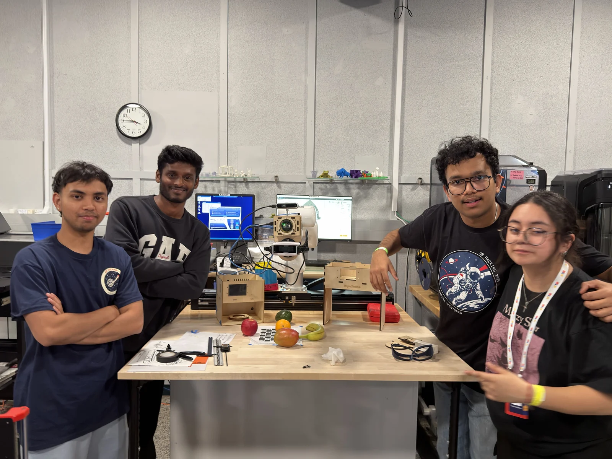
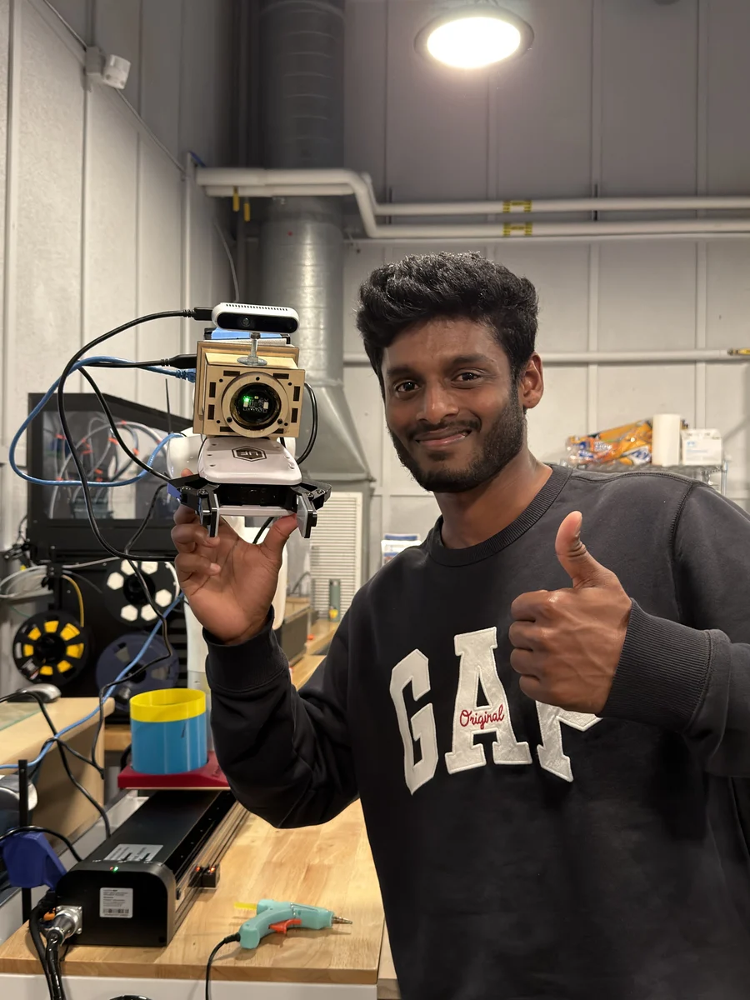
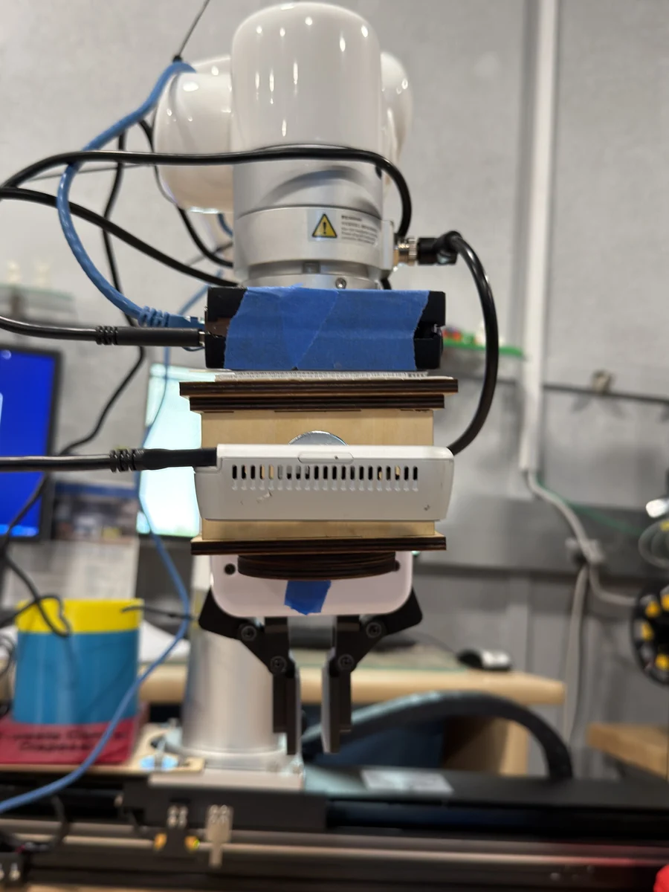

Build diary / UB Hacking 2026
A hackathon, a robot arm, and a table full of fruit.
At UB Hacking 2026, my friends and I built RipeSense: a project connecting produce inspection, robotic sorting and ideas for using food before it goes to waste.

I took part with Jill Guerrero, Sujal Dharne and V. Narayan Kushwaha. The 24-hour build gave us a practical reason to bring our different backgrounds together: make something that could inspect produce, communicate a useful result and connect it to a physical action.
The idea behind RipeSense
Fruit can be difficult to judge from its appearance alone. Our project explored camera and sensor inputs for assessing ripeness, a robot arm for sorting, and recipe suggestions based on the produce’s condition. The Spectrum reported that part of the inspiration came from Sujal’s grandparents growing mangoes in India.
The project has two visible sides: a cabinet-style scanning interface and a camera-equipped robot arm. The cabinet brings the inspection result onto a small screen. The arm turns the perception problem into a manipulation task: find an object, estimate where it is, approach it and handle it with a gripper.
Watch the prototype
These are recordings from our setup. They give a better sense of the build than a list of components: the workspace, the camera on the arm and the interface running beside real produce.
Where software meets the workbench
The robot code brings together depth-based object localization, image classification, picking and a dashboard. A prediction has to become a position the arm can use; a gripper has to approach and lift without losing the object. Lighting, camera placement and calibration all matter once the system leaves a dataset and sees the table in front of it.
That connection is what interests me about this project. My UAV research asks how to turn camera measurements into useful motion on a moving platform. RipeSense puts a related challenge on a workbench, with different hardware and a different task.


A build worth sharing
I wanted to share the people and the hardware behind this one. A robotics project comes together through conversations at the table, small adjustments to a mount, software changes and another test. The team photo and recordings capture that part of the work.
Seeing our project covered in The Spectrum made the weekend especially memorable. It is a record of our participation and a chance to show what we built together.
Photos and videos from our project setup. Technical descriptions are based on the RipeSense project code and documentation; the event and press details are linked above.